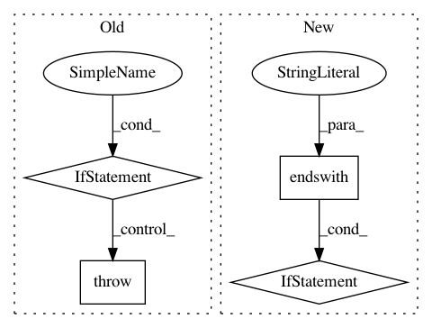

66a06524eba0b22d14204baeb2ca6d4c9db7d1d0,scripts/semantic_types.py,,convert_coq_to_nltk_type,#Any#,245
Before Change
type_ids.append("t")
elif type_item.startswith("Event"):
type_ids.append("v")
elif type_item != "->":
raise(ValueError("Invalid type name: %s in %s" % (type_item, coq_type)))
assert len(type_ids) > 0
if len(type_ids) == 1:
nltk_type_str = type_ids[0]
else:
After Change
"Entity", "e").replace(
"Prop", "t").replace(
"Event", "v")
if not nltk_type_str.startswith("(") or not nltk_type_str.endswith("("):
nltk_type_str = "(" + nltk_type_str + ")"
// Add pre-terminals (necessary for NLTK, if we convert to CNF).
nltk_type_str = re.sub(r"([evt])", r"(N \1)", nltk_type_str)
nltk_type_tree = tree_or_string(nltk_type_str)
nltk_type_tree.chomsky_normal_form(factor="right")
nltk_type_str = remove_labels_and_unaries(nltk_type_tree).replace(
In pattern: SUPERPATTERN
Frequency: 3
Non-data size: 4
Instances
Project Name: mynlp/ccg2lambda
Commit Name: 66a06524eba0b22d14204baeb2ca6d4c9db7d1d0
Time: 2017-05-12
Author: pascual@nii.ac.jp
File Name: scripts/semantic_types.py
Class Name:
Method Name: convert_coq_to_nltk_type
Project Name: SpiNNakerManchester/sPyNNaker
Commit Name: 6a968dc9a3faad2037bfd1a8f12b038a368eee4d
Time: 2018-02-20
Author: christian.brenninkmeijer@manchester.ac.uk
File Name: spynnaker/pyNN/models/neuron/abstract_population_vertex.py
Class Name: AbstractPopulationVertex
Method Name: initial_values
Project Name: IndicoDataSolutions/finetune
Commit Name: 880e57c9796c5f4ed79195bdd38bc4b0d3abf25f
Time: 2018-10-01
Author: benlt@hotmail.co.uk
File Name: finetune/saver.py
Class Name: Saver
Method Name: save